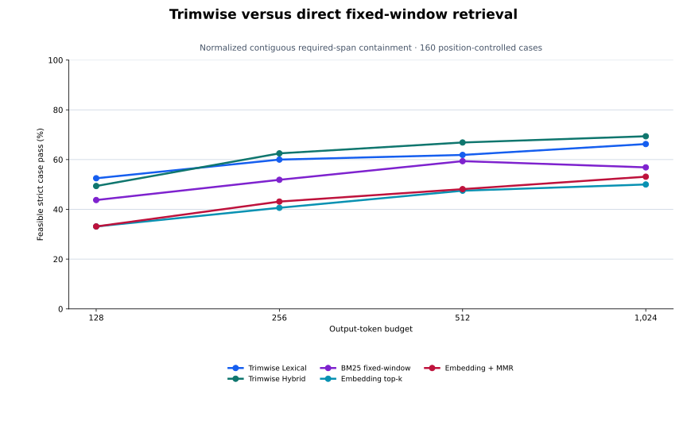
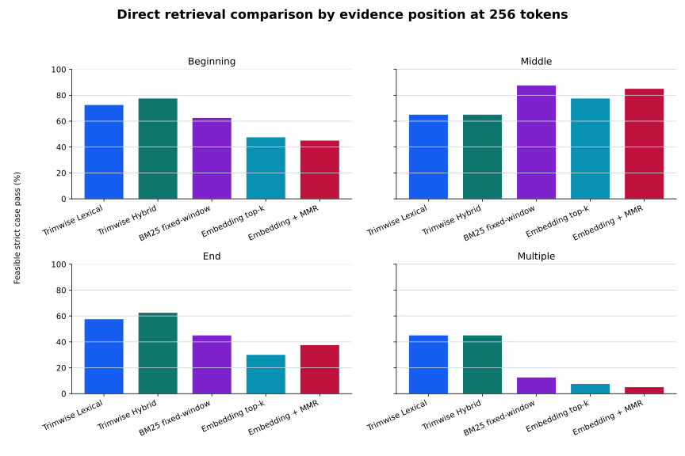

QUERY-AWARE DIRECT BASELINES
Every method receives the same source, question, budgets, and strict source-span scorer. The three direct baselines use 128-token fixed windows with 32-token overlap and reconstruct their selected source windows in source order. No downstream LLM calls are included.

| Method | 128 | 256 | 512 | 1,024 |
|---|---|---|---|---|
| Trimwise Lexical | 52.5% | 60.0% | 61.9% | 66.2% |
| Trimwise Hybrid | 49.4% | 62.5% | 66.9% | 69.4% |
| BM25 fixed-window | 43.8% | 51.9% | 59.4% | 56.9% |
| Embedding top-k | 33.1% | 40.6% | 47.5% | 50.0% |
| Embedding + MMR | 33.1% | 43.1% | 48.1% | 53.1% |
Span survival ignores prohibited content. Feasible pass also requires prohibited text to be absent and the output to fit its budget, so it reveals when retrieving more evidence also retrieves content the case explicitly forbids.
| Method | Span survival | Feasible pass | Prohibited text |
|---|---|---|---|
| Trimwise Lexical | 71.9% | 60.0% | 18.1% |
| Trimwise Hybrid | 74.4% | 62.5% | 18.1% |
| BM25 fixed-window | 55.6% | 51.9% | 13.8% |
| Embedding top-k | 40.6% | 40.6% | 6.9% |
| Embedding + MMR | 43.1% | 43.1% | 6.9% |
